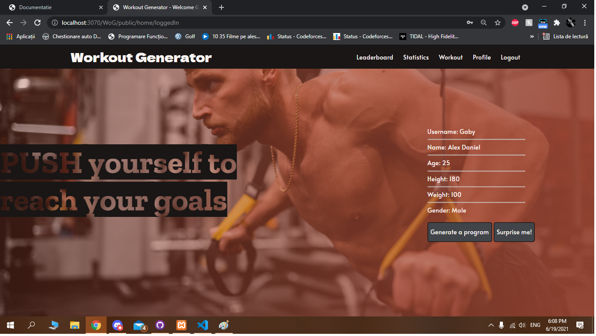
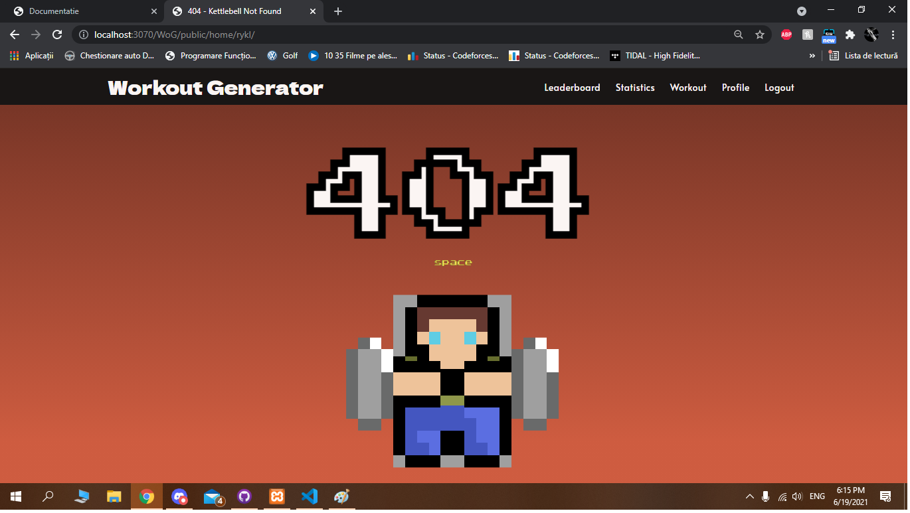

Page Inner Workings
Pagina de register

Pagina de inregistrare foloseste Validator pentru a verifica corectitudinea informatiilor introduse si a evita introducerea de informatii gresite. Datele introduse gresit primesc un feedback negativ din partea site-ului. Lucru ce imbunatateste normalizarea datelor venite.
De asemenea, este verificata unicitatea fiecariu utilizator nou.
Pagina de logare
Paina de logare foloseste Validator pentru a compara datele introduse cu cele existente in baza de date, iar in caz de esec, notifica utilizatorul prin mesaje sugestive.
Logged in page
Pagina de dashboard primeste datele fiecarui utilizator din baza de date si le afiseaza in tabelul din partea dreapta a ecranului.
>Error 404 page
Pagina de Error prezinta un joc ce foloseste 2 spite-uri pentru a crea animatia,
Pagina Generare

La pagina de generare, utilizatorul este intampiat de un formular unde trebuie inroduse niste preferinte in vederea generarii unui program de antrenament. Dupa ce este realizat acest pas, algoritmul genereaza un antrenament in mod nedeterminist.
Pagina Workout
Pagina de workout ofera utilizatorului un tabel unde poate sa isi acceseze exercitiile ce nu sunt terminate si sa vada antrenamentul curent. De asemenea, cand un antrenament este terminat, utilizatorul primeste un punctaj ce se adauga la scor pentru clasament.
Pagina Profile

Pagina de profil prezinta utilizatorului un formular unde ii sunt incarcate datele trimise in momentul inregistrarii. Acest formular ofera posibiltatea de a modifica acele date intr-un mod simplu si rapid.
Pagina Detalii

Daca utilizatorul se afla pe pagina de workout, si doreste sa afle mai multe detalii despre un anumit antrenament, acesta poate da click pe numele acelui antrenament si este dus pe pagina unde sunt prezentate detalii despre acel antrenament, cat si un videoclip.
Pagina Statistica

In meniul din partea de sus a paginii, utilizatorul gaseste putonul "Statistics" ce il trimite pe pagina de statistica unde gaseste grafice si valori reprezentand informatiile despre activitatea sa pe site.
Primul grafic arata numarul de puncte adunate pe luna.
Al doilea grafic arata ce mase musculare ai antrenat pana in acest moment si de cate ori.
Al treilea grafic arata ce tipuri de exercitii ai avut pana acuma si numarul acestora.
Graficul numarul 4 arata numarul de exercitii realizate in medie in fiecare zi a saptamanii.
Ultimul grafic arata cate antrenamente de o anumita intesitate ai facut pana acuma.
Cele 3 randuri de sub grafice arata: cea mai lunga serie de zile consecutive in care ai avut activitate, cate antrenamente ai in medie pe saptamana, si cate antrenamente ai in medie pe luna.
Pagina Detalii

In meniul din partea de sus a paginii, utilizatorul gaseste putonul "Leaderboard" ce il trimite pe pagina de leaderboard unde gaseste clasamentul cu utilizatorii de pe site, si progresul lor. Aici utilizatorul curent este afisat cu culoarea galbena.
Aici utilizatorul poate accesa si descarca clasamentul in format JSON si PDF, si il poate avea tip RSS.